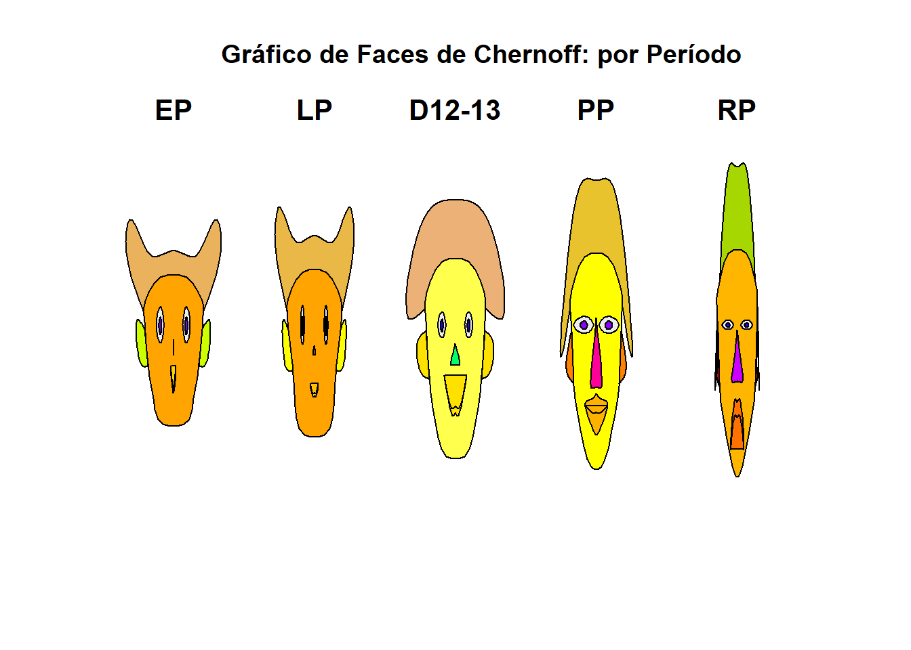
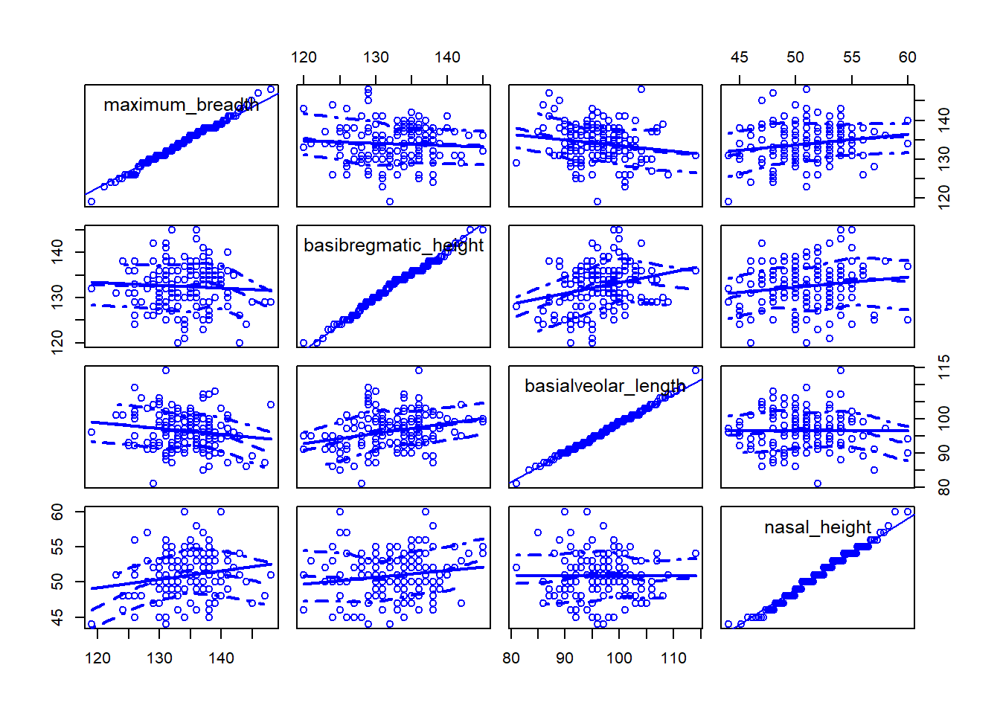

# A tibble: 6 × 5
period maximum_breadth basibregmatic_height basialveolar_length nasal_height
<fct> <dbl> <dbl> <dbl> <dbl>
1 Early p… 131 138 89 49
2 Early p… 125 131 92 48
3 Early p… 131 132 99 50
4 Early p… 119 132 96 44
5 Early p… 136 143 100 54
6 Early p… 138 137 89 56Análise Exploratória Multivariada - Tarefa 1
1 Exemplo: Crânios egípcios
1.1 Sobre o exemplo escolhido:
O conjunto de dados “Egyptian skulls” contém informações sobre crânios egípcios masculinos (em mm) da área de Tebas, no Egito. Há cinco amostras de 30 crânios cada uma do período pré-dinástico primitivo (cerca de 4000 a.C.), do período pré-dinástico antigo (cerca de 3300 a.C.), das 12ª e 13ª dinastias (cerca de 1850 a.C.), do período Ptolemaico (cerca de 200 a.C.) e do período Romano (cerca de 150 d.C.). Quatro medidas são apresentadas para cada crânio.
Questões abordadas no livro, são:
Como estão relacionadas as quatro medidas?
Existem diferenças estatisticamente significantes nas médias amostrais das variáveis, e, se existem, essas diferenças refletem mudanças graduais ao longo do tempo na forma e no tamanho dos crânios?
Existem diferenças significantes nos desvios padrão amostrais para as variáveis, e, se existem, essas diferenças refletem mudanças graduais ao longo do tempo na quantidade de variação?
É possível construir uma função das quatro variáveis que, em algum sentido, descreva as mudanças ao longo do tempo?
1.2 Visualizando os dados
1.2.1 Valores típicos
Largura Máxima e Altura Nasal: apresentam tendência de crescimento gradual ao longo dos período, com as maiores medianas registradas no período Romano.
Altura Basibregmática e Comprimento Basialveolar: mostram uma tendência descrescente, com redução dessas medidas craniana com o passar do tempo.
1.2.2 Variabilidade
Mais homogêneos (menos variáveis): períodos com caixas e hastes curtas, com 12ª e 13ª dinástico na Largura Máxima e o período Ptolomaico na Altura Basibregmática.
Mais heterogêneos (mais variáveis): o período Pré-dinástico Primitivo apresenta maior disperção (caixas maiores e hastes longas), nas variáveis de largura e comprimento.
1.2.3 Valores Atípicos(outliers)
No boxplot de Largura Máxima, se observa ponto fora do padrão da época no período Pré-dinástico Antigo. Sendo identificado outliers em 3 dos 4 gráficos, sugerindo que houve crânios com medidas que fugiram ao padrão da época.
1.2.4 Simetria
Assimetria Positiva: mediana próxima ao fundo da caixa (Q1). Como na Largura Máxima no Período Ptolemaico.
Assimetria Negatica: mediana próxima ao topo da caixa (Q3). Como no período Ptolomaico para o Comprimento Basialveolar.
Simetria: mediana no centro da caixa e hastes equivalente. No período Romano na Largura Máxima, se pode observar uma distribuição aproximadamente simétrica.
Se pode concluir que há um aumento gradual na Largura Máxima dos crânios ao longo dos séculos. O período mais homogêneo é o 12ª e 13ª dinástico, possuindo caixa mais compacta. Enquanto que o período Pré-dinástico antigo é mais heterogêneo, com haste inferior longa, indicando grande variabilidade entre crâneos de menor largura.
1.3 Gráfico de Faces de Chernoff

1.4 Gráfico de Pares

1.5 Coeficiênte de Variação
O gráfico indica que conforme passou os períodos do Pré-dinástico ao Romano, a variação nas característica crânianas tendeu a aumentar. Por media, o que se observa:
Altura Nasal: apresenta a maior variabilidade geral, com pico no período Romano, que evidencia que o formato do nariz era a característica mais diversa entre os indivíduos naquele período.
Largura Máxima e Altura basibregmática: são as medidas mais homogêneas, com a maiora dos coeficientes estando abaixo de 4%.
Como já observado, o período Romano se destaca por ter maior variação em quase todas as categorias, que evidencia uma maior diversidade biológica durante o período Romano, comparado aos períodos mais antigos.
Na variável comprimento basialveolar, o período Pré-dinático primitvo mostra uma variação maior do que os períodos posteriores, quebrando um comportamento de crescimento gradual.